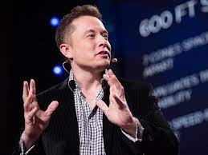
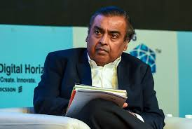
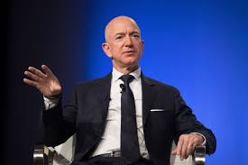
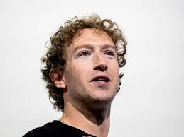

Elon Musk
Description
- Birth and Education: Born on June 28, 1971 in Pretoria, South Africa, Musk studied at Queen’s University (Canada) and later transferred to the University of Pennsylvania, earning degrees in Physics and Economics.
- Net Worth: As of 2025, Elon Musk’s net worth is estimated to be around $180–200 billion, making him one of the richest people in the world.
- Future Plan: Musk aims to colonize Mars through SpaceX, expand AI innovation with xAI, and turn X into a global "everything app."
- Motive: His core motive is to ensure the long-term survival of humanity by advancing sustainable energy, space exploration, and human-AI integration.

Bill Gates
Major Companies Owned
- Microsoft Corp
- Cascade Investment LLC
- Farmland Ownership
- Bill and Melinda Gates Foundation
Description
- Birth and Education: Born on October 28, 1955, in Seattle, Gates studied at Harvard University but dropped out to co-found Microsoft in 1975.
- Net Worth: As of 2025, Bill Gates’ net worth is approximately $113 billion, ranking him among the world's top 15 richest individuals.
- Future Plan: He plans to donate 99% of his wealth by 2045 and wind down the Bill & Melinda Gates Foundation, distributing around $200 billion.
- Motive: His core motive is to improve global health, education, and reduce poverty, using science, technology, and philanthropy to solve the world’s toughest problems.

Mukesh Ambani
Major Companies Owned
Description
- Net Worth: As of 2025, Mukesh Ambani’s net worth is approximately $116 billion, placing him among the top 10 richest individuals globally.
- Birth and Education: Born on April 19, 1957, in Aden (Yemen), Ambani studied Chemical Engineering at ICT Mumbai and attended Stanford University, which he left to join Reliance.
- Future Plan: He plans to invest heavily in green energy, 5G, and global retail expansion, aiming to transform Reliance into a tech-driven global conglomerate.
- Motive: His core motive is to drive India's self-reliance and economic growth by empowering industries through innovation, infrastructure, and digital transformation.

Jeff Bezos
Major Companies Owned
Description
- Net Worth: As of 2025, Jeff Bezos’ net worth is approximately $190 billion, ranking him among the top 3 richest individuals in the world.
- Birth and Education: Born on January 12, 1964, in Albuquerque, New Mexico, he studied Electrical Engineering and Computer Science at Princeton University.
- Future Plan: He plans to expand Blue Origin for space colonization and continue investing in AI, biotech, and climate initiatives through personal ventures.
- Motive: Bezos aims to push the boundaries of technology and human potential, building a legacy that extends from Earth to space.

Mark Zuckerberg
Major Companies Owned
Description
- Net Worth: As of 2025, Mark Zuckerberg’s net worth is approximately $150 billion, placing him among the top 10 richest people globally.
- Birth and Education: Born on May 14, 1984, in White Plains, New York, he studied Computer Science and Psychology at Harvard University, where he founded Facebook.
- Future Plan: He plans to lead the world into the metaverse, expand in AI, AR/VR, and develop next-gen digital connectivity platforms.
- Motive: Zuckerberg’s motive is to connect the world, empower creators, and reshape how people interact through technology and virtual experiences.
